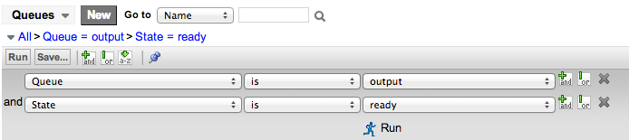

Logs and Queues Best Practices
Contents
1 Overview
Reviewing queues and logs during development can help identify any issues that may not be immediately apparent. Uncorrected issues can cause performance problems and unexpected results. The goal is to achieve zero error and warning log entries to ensure the highest quality development.
See Viewing System Logs for an overview of available logs and where to find them. This page focuses on what to look for in various logs to reduce the risk of issues.
2 Reviewing Warnings and Errors
Review queues and logs frequently throughout the development process to ensure correct operation. Waiting until development is complete makes diagnosis and correction more difficult.
Navigate to one of these modules:
- System Logs > System Log > Warnings: shows all warning messages.
- System Logs > System Log > Errors shows all error messages.
- System Logs > All: shows all messages together. Run the filter conditions Level is Warning or Level is Error to view all warnings and errors in the same list.
Each entry should either be corrected or documented as a known issue.
- Warning messages: indicate where issues have occurred. With this information, it is usually fairly simple to make corrections to your scripts or other objects.
- Error messages: indicate that an issue occurred. Error messages are generally more challenging to understand because they frequently involve long lists of Java modules (called stack traces). If you cannot determine the source of the issue by reviewing the log message, contact ServiceNow Technical Support.
Tip: Right-click the Created column heading and select Sort (z to a) to show the most recent warnings or errors at the top of the list. Then, add the Created by column to the Log list. As you work, check the list for recent warnings or errors and see who generated them.
3 Diagnosing Problems With Slow SQL Statements
You may be able to diagnose potential performance issues by reviewing the Slow SQL Statements log found in System Diagnostics > Slow Queries (Calgary release). This table stores queries whose total execution time is longer than one second (1000ms). Use the data in the Total Execution Time and the Example columns to get an idea of which script may be triggering slow queries and look for potential performance improvement opportunities.
{kind=link}
Instances on versions prior to Calgary can use the System Diagnostics > Slow SQL Statements module to get the same information. Use the data in the Type and SQL columns to get an idea of which script may be triggering slow queries and look for potential performance improvement opportunities.
{kind=link}
4 Checking Log File Sizes
Check the size of log files regularly. Navigate to System Logs > Log File Download to review recent log files (files with names that start with localhost_log). If a log file you have been checking suddenly increases in size, there may be excessive errors, debugging may be enabled, or a new plugin may have been activated. Additional investigation is recommended.
| |
Note: By default, ServiceNow compresses log files after four days. Do not be confused by comparing the file size of compressed and uncompressed log files. |
4.1 Viewing Log Detail
To review a system log file in detail:
- Log in to the instance with the admin role.
- Navigate to System Logs > Log File Download.
- Click the name of the log file you want to download.
- Under Related Links, click Download log.
- When the file is saved to your local machine, review the log in a text editor.
Search for these messages, which may indicate potential issues:
- Slow evaluate
- Slow business rule
- Recursive business rule
- Compiler exception
- Warning - large table limit
- Extremely large result
If you find any of these messages in the log file, determine the root cause of the issue, such as a poorly performing script, and correct it. For example, Extremely large result may be caused by a poorly-designed query returning too many results. Likewise, a Recursive business rule may be the result of a current.update() statement placed in a before or after business rule.
5 Checking the ECC Queue
The External Communication Channel (ECC) queue is a table used to manage communications to and from one or more MID Servers. The MID Server aids in communication and movement of data between the ServiceNow platform and external applications, data sources, and services. Periodic review of the ECC queue can help determine if problems exist with the instance or MID Server.
To review the ECC queue:
- Log in to the instance with the admin role.
- Navigate to ECC > Queue.
- Create a filter condition containing Queue is output and State is ready.
- Sample ECC Queue filter
- The filtered list displays records waiting to be picked up by the MID Server (displayed in the Agent column). Take note of the oldest created records.
{kind=link}
Depending on your MID Server configuration, output records may be in the ready state for up to four minutes. If you see records in the ready state with creation times older than four minutes, check to ensure the MID Server is running and communicating with the instance. If necessary, restart the MID Server and review the logs.
6 Checking the Email Queue
ServiceNow can notify selected users automatically via email of specific activities in the system, such as updates to incidents or change requests. It is recommended that you occasionally inspect the email queues to ensure email is operating properly. To check the email queues, open the System Mailboxes application and select any of the modules, such as Inbox, Outbox, or Junk.
The lists provide information about each email notification, such as the creation date, user ID of the sender, the recipients, subject, and the state of the event.
For more information, open the ServiceNow Knowledge Base and access the following two articles:
- For troubleshooting inbound email, see KB0524472.
- For troubleshooting outbound email, see KB0521382.
7 Reviewing Event Logs
The events log records all system events that occur within the ServiceNow system. Periodically review the events log by navigating to either of these locations:
- System Logs > Events
- System Policy > Events > Events Log
Sort the Processing duration in descending order (Z-A) to determine which events are taking the longest to process (the processing duration is listed in milliseconds). Events that take a long time to process could be the result of inefficient scripts or a system error.
What constitutes a "long" duration is a matter of observation. In general, if an event takes longer than 1000 milliseconds, you should understand what email notifications or script actions are triggered by the event and what they are doing. It may be reasonable for a script action to take one second. On the other hand, email notifications are generally quick to process (a few milliseconds) and it would be unreasonable for an event triggering an email notification to take 6000 milliseconds. If such a case is found, you may need to contact ServiceNow Technical Support for assistance.
Check the Processed column for empty entries by adding the Processed is Empty condition to the list filter. Notice how many unprocessed events there are by checking the counter in the upper right, just above the list heading. Every minute or two, refresh the list and notice the new count. If the total number of records steadily decreases, this indicates the system has an event backlog and is working to catch up. If the number of unprocessed events steadily increases, it could indicate the system is not processing events correctly. You may need to contact ServiceNow Technical Support for assistance.
7.1 Removing Unused Events
You can improve overall system performance by removing unused events. From the Events list, right-click the Name column and select Group by Name.
{kind=link}
This view allows you to see many times a particular event has been logged. Review the records for the events with the highest counts and determine what actions the event triggers. If there is no action responding to the event, consider disabling the script that logs the event.
For example, assume there is a business rule that runs on the Configuration Item [cmdb_ci] table and logs the event ci.updated whenever a record is updated. The event was put in place for future use, but does not currently trigger a notification or script action. When you import 100,000 CIs, the business rule is run and adds 100,000 events to the event log which are needlessly processed by the event processing engine. Disabling the business rules on the import set or commenting out the gs.eventQueue() call in the business rule can prevent unused events from being logged.